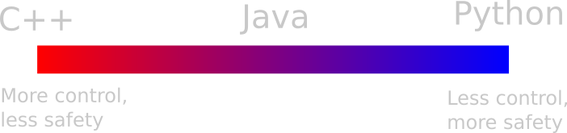

Introduction to Rust

by Jan Van Sweevelt
Who am I ?
- Education in embedded system design and development
- Experience in a very broad range of projects
- Works at Philips since 2015 in the Concepts group at the Hightech Campus
- Personal interest in realtime 3D graphics and hardware (OpenGL, Cuda, ...)
Introduction to Rust
- What
- Ownership
- Borrowing
- Tooling
Introduction to Rust
- What
What is Rust ?
Rust is a systems programming language that runs blazingly fast, prevents almost all crashes, and eliminates data races.
fn main() {
println!("Hello, {}", "world!");
}
Why Rust ?
Systems Programming Language
- Fine grained control over allocation
- No garbage collector
- Minimal runtime
- Close to the metal
Runs blazing fast
- Compiles to an executable binary
- LLVM backend
- LLVM's suite of optimizations
- Competitive with C/C++
Prevents almost all crashes
- Safe by default
- Sophisticated type system and analysis
- No segfaults
- No null pointers
- No dangling pointers
Eliminates data races
- Ownership guarantees
- Borrowing prevents dangling pointers
- Strong, safe abstractions
Who's using Rust ?
Rust is using Rust !
Makeup of code in the Rust repository- 92% Rust
- 3.5% C (bundled libraries)
- 1.5% shell scripts
- 3.0% other
Servo
Parallel layout engine written in Rust pushing browser layout to new boundariesIntroduction to Rust
- What
- Ownership
Ownership
Variables are moved to new locations, preventing the previous location from using it
There is only one owner of the data !!!Ownership
int main() {
int *slot = malloc(sizeof(int));
*slot = 3;
helper(slot);
helper(slot);
}
void helper(int *slot) {
printf("The number was: %d\n", *slot);
free(slot);
}
❯ ./a.out
The number was: 3
The number was: 1595491008
free(): double free detected in tcache 2
Aborted (core dumped)
Ownership
fn main() {
let slot = Box::new(3);
helper(slot); // moves the value !
helper(slot); // error: use of moved value
}
fn helper(slot: Box<i32>) {
println!("The number was: {}", slot);
}
Ownership
Transfer of ownership
fn helper() -> Box<i32> {
let three = Box::new(3);
return three; // transfer ownership
}
fn main() {
// acquire ownership of return value
let my_three = helper();
}
Ownership
Ownership is a deep property of a type
struct A {b: B}
struct B {c: Box<i32>}
fn main() {
let a: A = A { b: B { c: Box::new(2) } };
let x = a.b.c;
let y: B = a.b; // error ! (moved by 'x')
}
Ownership
Ownership rules- Each value in Rust has a variable called its owner
- There can be only one owner at a time
- When the owner goes out of scope, the value will be dropped
Introduction to Rust
- What
- Ownership
- Borrowing
Borrowing
Owned values can be borrowed in Rust to allow usage for a certain period of time.
// The '&' sigil means "borrowed reference"
fn helper(slot: &Vec<i32>) { /* ... */ }
fn main() {
let a = Vec::new();
// doesn't move !
helper(&a);
helper(&a);
}
Borrowing
Borrowed values are only valid for a particular lifetime
let a: ∫
{
let b = 3;
a = &b;
} // error ! 'b' does not live long enough
let a: ∫
let b = 3;
a = &b; // ok, 'b' has the same lifetime as 'a'
Borrowing
Borrowing prevents moving
let a = Vec::new();
let b = &a;
work_with(a); // error !
let a = Vec::new();
{
let b = &a;
}
work_with(a); // ok
Borrowing
A common mistake in C:
fn main() {
println!("Your number was: {}", *helper());
}
fn helper() -> &i32 {
let a = 3;
return &a;
}
Borrowing
Borrows can be nested
struct MyStruct { inner: i32 }
fn get(s: &MyStruct) -> &i32 {
&s.inner
}
fn main() {
let a = MyStruct { inner: 3 };
let inner = get(&a); // same lifetime as 'a'
}
Borrowing
Borrowed values can become owned values through cloning
fn clone_vector(v: &Vec<i32>) -> Vec<i32> {
v.clone()
}
Borrowing
Borrowing rules- At any given time, you can have either but not both of the following:
- one mutable reference
- any number of immutable references
- References must always be valid
Introduction to Rust
- What
- Ownership
- Borrowing
- Tooling
Tooling
Rust is not only a compiler but is a whole ecosystem of tools- Cargo is the build tool
- Rust Language Server brings editor support to an editor near you
- Built in unittest framework
- Clippy is a linter tool
- Rustfmt is a rust code formatter with editor integration
- Cargo doc is a document builder
Tooling
- crates.io to publish your crates and serve documentation
- crates.io can be setup on premise, for packages that cannot be published
Tooling
Lots of tools integrated in Cargo are starting to come in the ecosystem- cargo tarpaulin is a coverage tool
- cargo audit checks for security vulnerabilities
- cargo outdated checks for outdated crates
- ...
Tooling
Once rust code is compiled there is no difference with code compiled in C or C++. The same artifacts are generated (executables and .so/.dll files). A lot of existing tooling can be used on these artifiacts:- perf is a performance measurement tool
- valgrind tools can detect threading issues, memory leaks